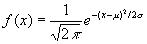 -------------------------
[1]
where f(x)
is the frequency function. The total area under this curve, from
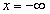to
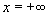, is one square
unit. Therefore the area between any two points, say from x=a to x=b, is the
proportion of cases which lie between the two points. A plot of Eq. 1 yields a
bell-shaped curve having a maximum ordinate at
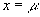 and decreasing to
zero at both
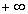 and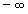.
If the standard deviation
is small, the
curve is tall and thin; if
is large, the
curve is short and broad; see the Figure 1 below-
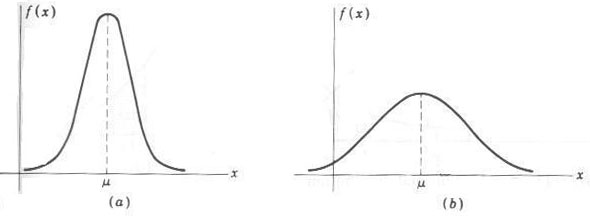
Figure 1 : The Shape of the normal distribution curve (a) Small (b) Large
In order to analyze different statistical cases, it is convenient to replace x in Eq. 1 with the standard variable z defined as
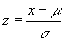 ------------------------- [2]
where now x is to be normally distributed with a mean of zero. Equation 1 then becomes a unit normal distribution and is written as
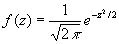 ------------------------- [3]
The distribution is illustrated in the following figure, Figure 2.
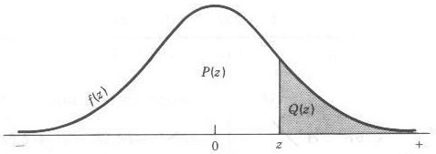
Figure 2 : The standard normal distribution
The ordinate at z is f(z), obtained using Eq 3. The areas Q(z) and P(z) under the curve can be found in statistical tables or approximated. Since the total area under the curve is unity
P(z) = 1 - Q(z) ------------------------- [4]
The term Q(z) is obtained by integrating the area under the curve. It can be approximated and then programmed for calculation using a polynomial expansion (Hewlett-Packard Applications Book, op. cit., p. 107). The results area found to be
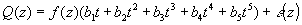 ------------------------- [5]
where
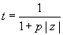, 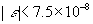
p = 0.2316419 b1 = 0.319381530
b2 = -0.356563782 b3 = 1.781477937
b4 = -1.821255978 b5 = 1.330274429
From the above equation we can calculate Q(z) for any distribution.
In this problem you have to determine the standard deviation and mean of some given data. Then for some given value find the number of population falling in the region Q(z) and P(z).
11 96 93 90 86 86 80 78 76 68 84 100 2 60 100 13 78 60 74 82 96 68 94 86 78 90 87 56 88 3 100 30 59
Data Set #1 Mean = 85.1818 Standard Deviation = 9.3895 P(z) = 0.9963, Q(z) = 0.0037, T = 0.0403 P(z) = 0.9427, Q(z) = 0.0573, T = 0.6299 Data Set #2 Mean = 79.7692 Standard Deviation = 12.4777 P(z) = 0.9475, Q(z) = 0.0525, T = 0.6821 P(z) = 1.0000, Q(z) = 0.0000, T = 0.0004 P(z) = 0.9520, Q(z) = 0.0480, T = 0.6241